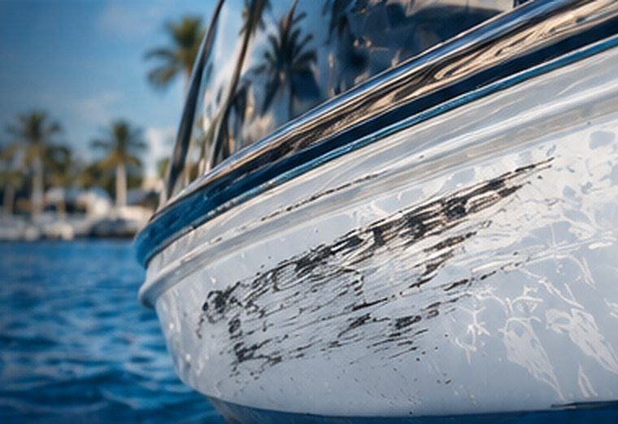
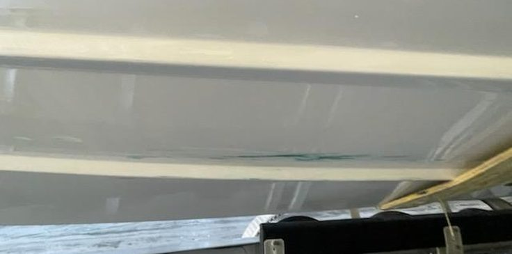
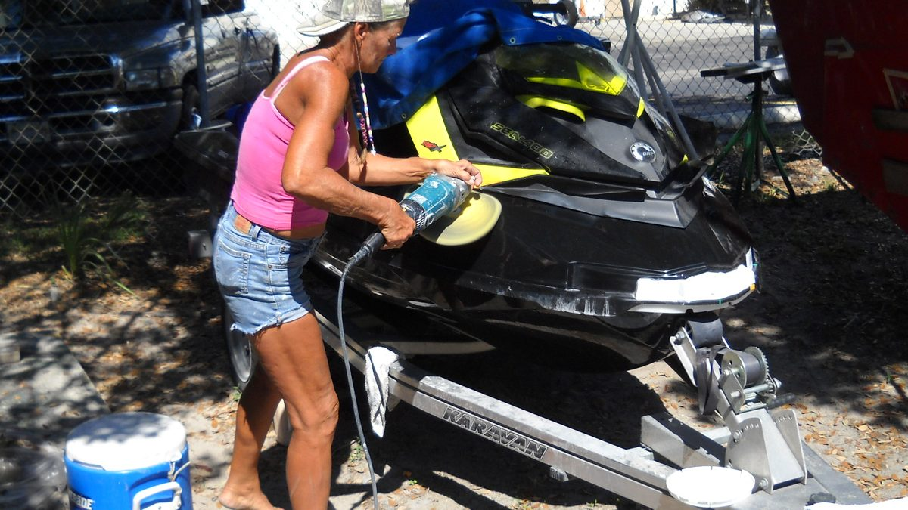
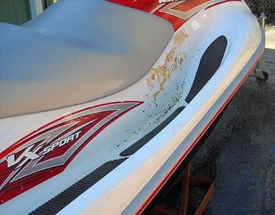

Gelcoat Scratches & Chips
From docks, trailers and beaches. Filled, color-matched and polished so the repair disappears.
Gelcoat RepairSea-Doo, Jet Ski and Yamaha WaveRunner hulls are fiberglass, just like larger boats, and they take more abuse: beaching, docking, trailering and the odd collision. Captain Levi’s repairs cracked, punctured and faded PWC hulls back to full strength and a like-new finish. Insurance claims welcome.
 2011 Yamaha VX Sport — repaired at our yard
2011 Yamaha VX Sport — repaired at our yard
Heavy use, beaching, docking and collisions damage the gelcoat and the fiberglass laminate underneath it. These are the repairs we see most often on personal watercraft.

From docks, trailers and beaches. Filled, color-matched and polished so the repair disappears.
Gelcoat Repair
Repeated pounding stresses the laminate. Cracks are ground out and relaminated, not just filled.
How We Repair It
Holes and deep gouges from impacts rebuilt with new fiberglass layers to full strength.
How We Repair It
Keel and intake areas worn thin from beaching are built back up and faired true.
How We Repair It
Stress cracking and delamination where the jet pump bolts in, repaired so the mount is solid again.
How We Repair It
Faded, oxidized colors and decals brought back with compounding, polishing and optional new graphics.
Oxidation RemovalThe brands differ in their pumps and hull shapes, but the fiberglass underneath responds to the same proper repair: grind to sound laminate, rebuild with the right resin and cloth, then match the finish. Here is what we see from the two most common makes around Tampa Bay.
Kawasaki Jet Ski and other makes are repaired the same way.
Sea-Doo hulls take the same dock, trailer and collision damage as any PWC. We handle collision repair, gelcoat repair and refinishing on Sea-Doo hulls, and we work with your insurer when a claim is involved.
WaveRunners are high-performance fiberglass hulls that need proper repairs when damaged. Impacts, beaching and normal use expose the gelcoat and the laminate under it to stress and water.

A PWC repair is a fiberglass repair first and a cosmetic repair second. Skip the first part and the crack comes back through the new gelcoat.
Cracks, gouges and weak laminate are ground back to sound fiberglass so the new material has something to bond to.
Fresh layers of biaxial cloth wet out with epoxy or vinyl ester resin rebuild the hull’s strength.
Epoxy fairing compound and P-77 polyester filler bring the surface back to its true shape, finished to a feather edge.
New gelcoat sprayed and matched to the factory tone so the repair blends in.
Long-board sanding and machine wet sanding give a smooth, straight profile with no ripple.
AQUABUFF compounds bring up a high gloss. Optional custom colors, graphics and a full detail to finish.
This 2011 Yamaha VX Sport came to us in January 2014. It had been stolen, abused and recovered with damaged rub rails and graphics, scuffed paint and fractures in the upper body, including a hard hit on the starboard bow. The owner’s son was heartbroken but glad to have it back.
The owner gave Captain Dave the insurance claim number and the work began. The bow was repaired with marine epoxy and fiberglass fabric, primed, faired with P-77 polyester filler and finished to match the factory red and white. It went home looking like it had never left.

The business’s own photos of this repair. The before shot is a close-up of the starboard bow; the after shot shows the whole craft.
Stolen, hit at the dock or damaged on the trailer? Give us your claim number with your photos and we’ll put the estimate together for your insurer.
A jet ski gets the same materials and the same method as a 40-foot hull in our yard. Pride, customer satisfaction and craftsmanship are a way of life here, not a slogan.
Proven. Reliable. Local.
Real People. Real Care.
Bring your claim number and photos.
Epoxy, vinyl ester, biaxial cloth, matched gelcoat.

Bring your PWC to our Largo shop and boat yard on its trailer, or ask about mobile service. Crews go out to boaters throughout Pinellas County and Tampa.
Send photos of the damage for a free quote, or call the yard.
Have a cracked, punctured or faded jet ski, Sea-Doo or WaveRunner, or an insurance claim to repair? Fill out the form or give us a call — we’ll get back to you as soon as possible. Your craft deserves the best, and we’re here to make it happen.
Tell us about your boat and the damage. We’ll get back to you quickly.

Captain Levi is an AI assistant. Chats may be saved so our crew can follow up. Nothing here is a confirmed quote. Privacy